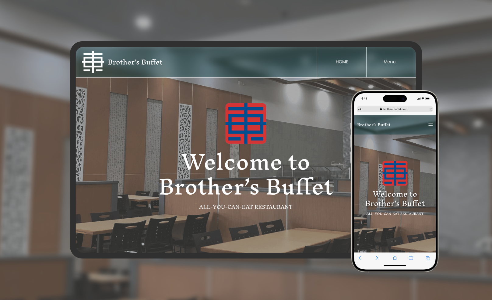
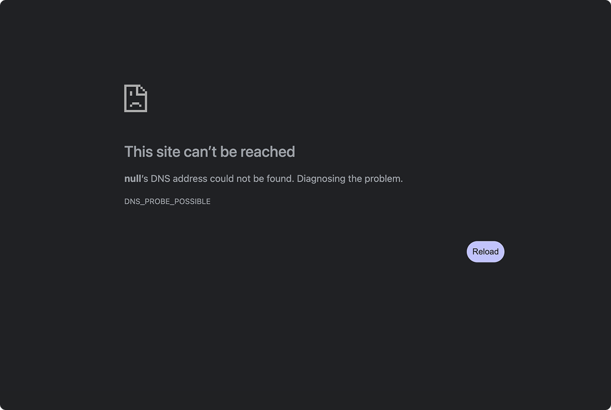
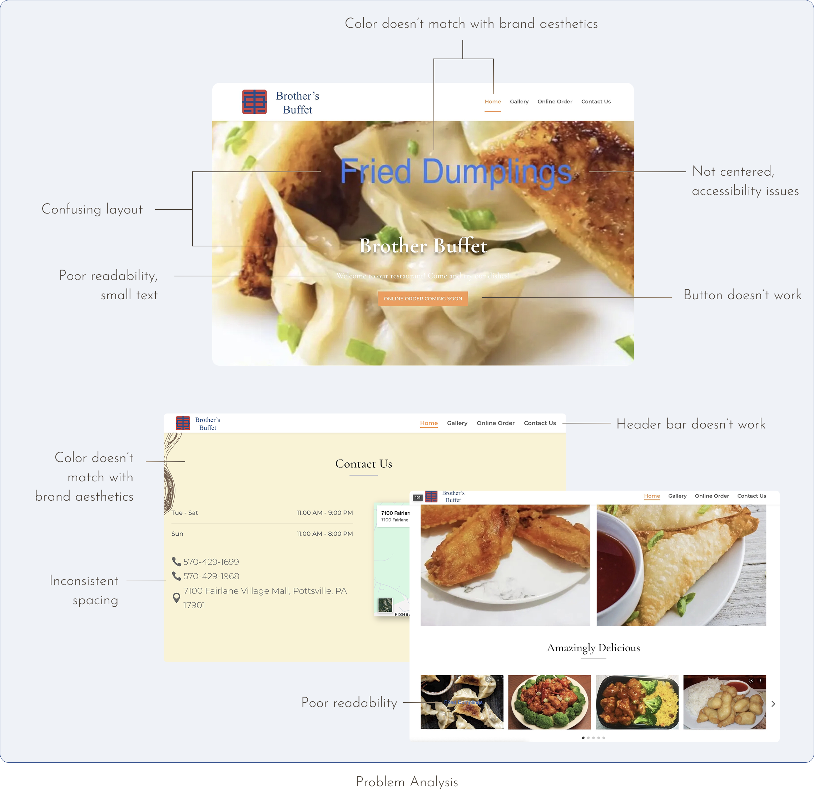
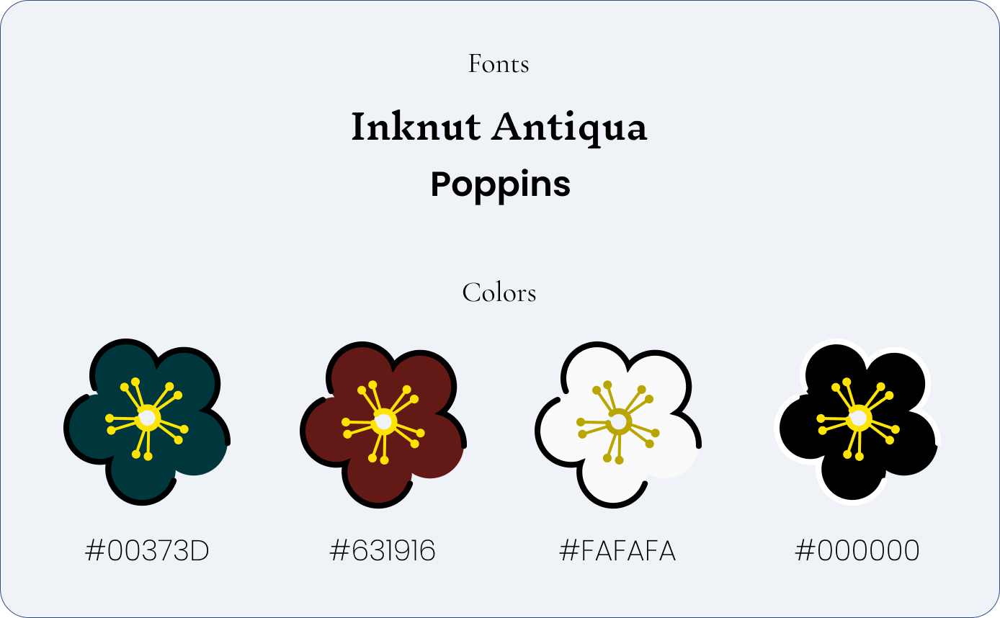
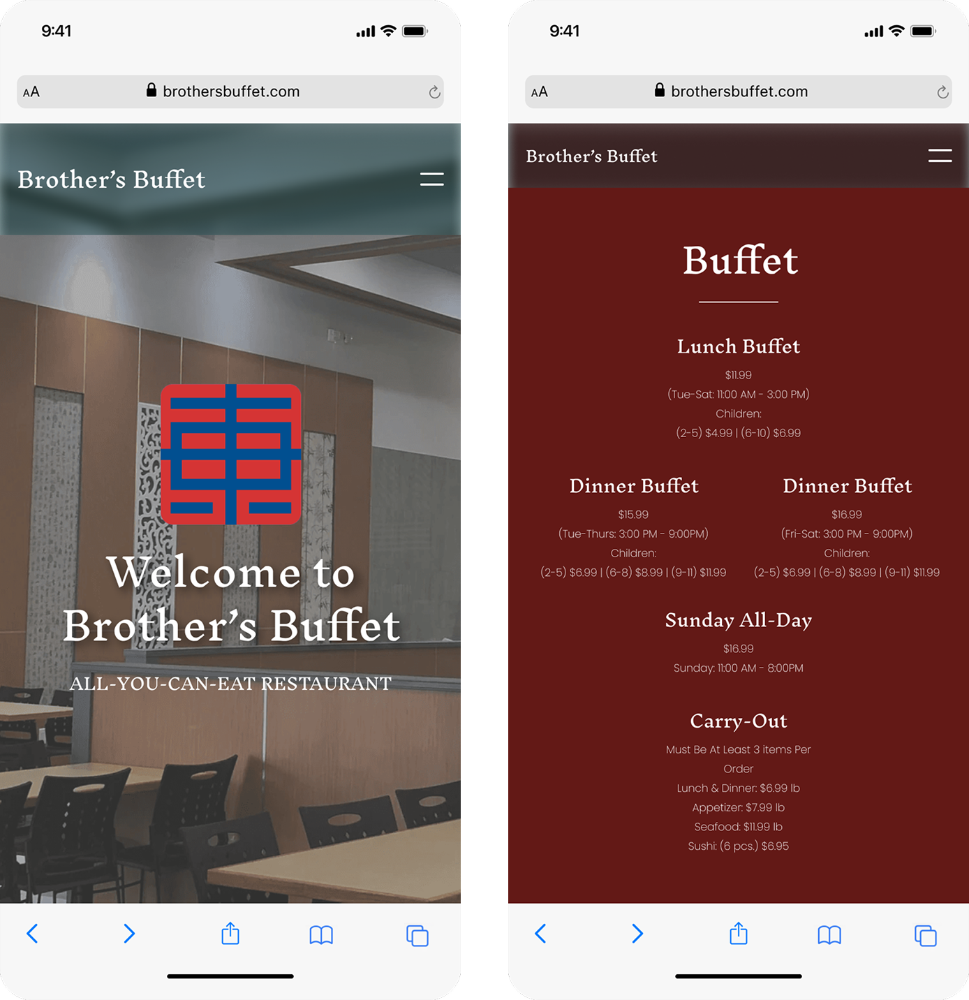
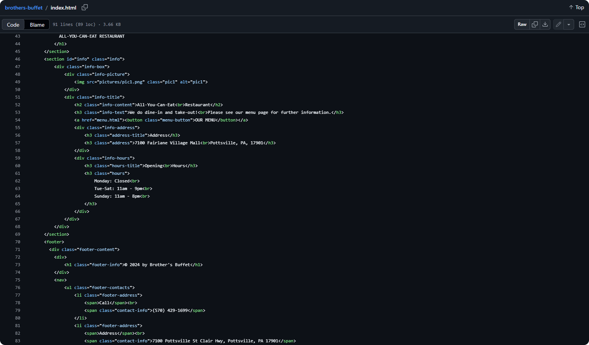

An informational and responsive page for a Chinese restaurant.

ROLE
UI/UX Designer
& Developer
TIMELINE
Summer 2022
(2 months)
TOOLS
Figma
Wix
GitHub
SKILLS
Web Design
Front-end Development

OVERVIEW
Brother’s Buffet is a family-owned American-Chinese buffet restaurant that has been open for decades in Pottsville, Pennsylvania. Following the restaurant’s interior renovations, the owners had decided to also redesign their restaurant’s website that would better represent the updated dining experience and provide customers with a modern and simple way to explore their menu, business hours, pricings, and other essential information.
As the sole UI/UX designer and developer, I led the redesign from initial wireframes to the final responsive website.
01.
 OBJECTIVE
OBJECTIVE

The previously existing website no longer met the needs of the business or its customers. Outdated visuals, broken navigation links, and constant accessibility issues created a frustrating experience. The overall design also failed to reflect the quality and elegance of the newly renovated restaurant.
The goal of the redesign was to modernize the website through improved accessibility, navigation, and a stronger visual hierarchy, while also maintaing the restaurant’s existing branding and color palette.

02.
WEBSITE AUDIT
Before beginning the redesign, I wanted to conduct a website audit to evaluate the existing experience and identify opportunity for improvement. I uncovered several usability issues that negatively impacted the customer experiences, and wanted to establish a clear direction for the redesign.

03.
PROCESS
Low-Fidelity Wireframes
To explore layouts and user flows, I created a series of low-fidelity wireframes that focused on structure and content organization before visual design. Presenting these concepts early allowed the restaurant owners to provide feedback before moving into high-fidelity designs.

Branding
Preserving the restaurant’s established color palette and elegance helped strengthen the restaurant’s brand identity without losing its familiarity.

Responsive Design
Since many customers are likely to brows the menu, hours, or location while on the go, responsiveness was a key consideration throughout the design process. The website was also optimized for mobile devices to ensure that content remained easy to navigate and read across a variety of screen sizes.

04.
DEVELOPMENT
Following the design phase, I transformed the approved concepts into a fully functional website. The site was initially developed and maintained using Wix to support the restaurant’s day-to-day content updates, and was later recreated through hand-coded front-end development and hosted on GitHub.

05.
KEY TAKEAWAYS
1. Responsive designs.
Designing for a restaurant website reminded me that users don’t always interact with websites the most, especially when it came to restaurants where people would view their menus on the go. This taught me to think about user behavior, and not just about screen sizes.
2. Conducting a website audit.
Reviewing the original website helped me figure out what works and doesn’t work for users. Rather than jumping straight into redesigning the interface, I learned the importance of first understanding the existing user experience and learning the root causes behind possible issues. This allowed me to make more intentional design decisions.
See my other works!